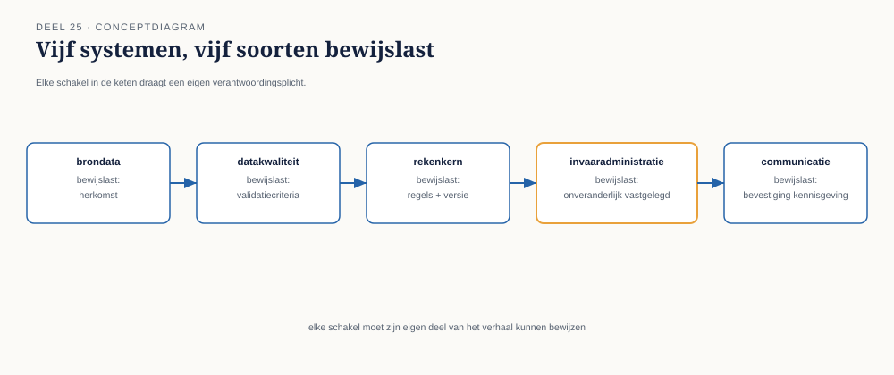
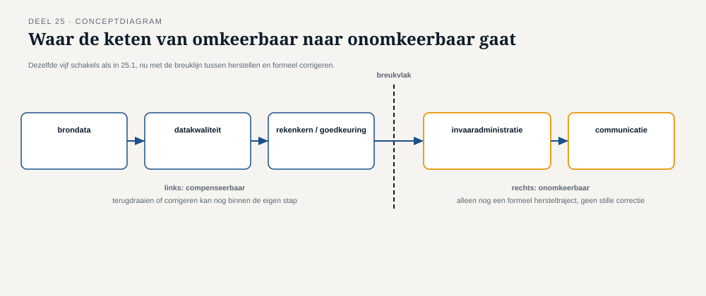

Deel 25 — Complexe eventketens: de event backbone voor invaren en datakwaliteit
Reader · Ductus-cursus Enterprise Integration Patterns · niveau 3 (expert) · deel 25 van 30
25.0 Vijf systemen, één deelnemer, één invaarmoment
Het invaarproces voor één deelnemer blijkt, uitgewerkt, een keten van minstens vijf systemen te doorlopen: KERN levert de brondata (huidige aanspraak, deelnemersgegevens), een apart datakwaliteitscontrolesysteem (nieuw gebouwd specifiek voor de Stelselovergang) valideert of die brondata voldoende betrouwbaar is om in te varen, een rekenkern (eveneens nieuw, gespecialiseerd in de complexe Wtp-rekenregels) berekent de nieuwe aanspraak, een invaaradministratie (event-sourced, zoals in deel 24 geïntroduceerd) legt het resultaat onveranderlijk vast, en tot slot het Werkgeversportaal en Nabestaandenloket die de deelnemer en diens eventuele nabestaanden informeren.
Dit is, structureel, geen nieuw probleem — het is het proceseigenaarschap-vraagstuk van deel 17 (orkestratie versus choreografie) en het compensatievraagstuk van deel 18 (saga's), nu toegepast op een keten waarvan elke stap zelf al de strengere event-sourcing-eisen van deel 23-24 moet naleven. Wat deze keten uniek maakt, is niet een nieuw patroon, maar de stapeling van eisen: elke stap moet niet alleen correct zijn (zoals altijd), maar ook zijn eigen correctheid onweerlegbaar kunnen bewijzen, jarenlang, aan een externe toezichthouder.

25.1 Waarom datakwaliteit een eigen stap in de keten is, niet een zijdelingse controle
Bij een gewone mutatie (niveau 1-2) was datavalidatie doorgaans een filter of enrichment-stap (deel 4, 13) — belangrijk, maar functioneel ondergeschikt aan de hoofdstroom. Bij invaren is datakwaliteit een eigen, gelijkwaardige stap in de keten, om een reden die rechtstreeks uit de wettelijke context volgt: een aanspraak die wordt ingevaren op basis van onbetrouwbare brondata, kan niet zomaar achteraf worden gecorrigeerd zoals een gewone mutatie — het invaarmoment zelf is, zoals deel 23 vaststelde, een onomkeerbaar, wettelijk feit. Een fout die pas na het invaren aan het licht komt, vergt niet een eenvoudige correctie maar een formeel hersteltraject, potentieel met toezichtimplicaties.
Dit verklaart de architectuurkeuze bij Meridiaan: het datakwaliteitscontrolesysteem is een verplichte, blokkerende stap vóór de rekenkern, georkestreerd (deel 17) in plaats van choreografisch — niet omdat orkestratie in het algemeen beter is (deel 17 stelde dat expliciet niet), maar omdat de vuistregel uit dat deel hier ondubbelzinnig naar orkestratie wijst: een bindende, onderling afhankelijke volgorde (geen berekening zonder gevalideerde data) die expliciete bewaking verdient.
Kernzin 25 van de cursus: bij wettelijk onomkeerbare stappen is de vuistregel voor orkestratie versus choreografie (deel 17) niet langer een architectuurvoorkeur maar een compliance-eis — de bindende afhankelijkheid bestaat niet alleen technisch, maar ook juridisch.
25.2 Saga-compensatie wanneer "compenseren" een formeel traject wordt
Deel 18 introduceerde saga-compensatie met de vuistregel dat compensatie zwaarder wordt naarmate een proces verder is gevorderd. Bij invaren is deze asymmetrie extremer dan bij enige eerdere casus in de cursus: een compensatie ná het invaarmoment zelf is, formeel, geen "compenserende actie" in de zin van deel 18 meer, maar een hersteltraject met eigen wettelijke kaders — Meridiaan kan een invaarbesluit niet stilletjes corrigeren met een nieuw, tegenovergesteld event zoals bij een gewone salariscorrectie; er gelden specifieke procedures voor herstel van een onjuist ingevaren aanspraak, vaak met kennisgevingsplicht aan de deelnemer en soms aan de toezichthouder.
Dit heeft een directe technische consequentie voor het ontwerp van de saga: de compensatiegrens moet vóór het onomkeerbare punt liggen, niet erna. Bij Meridiaan is daarom, tussen de rekenkern en de invaaradministratie, een expliciete, laatste goedkeuringsstap ingebouwd — een moment waarop een mens (of een geautomatiseerde, maar apart auditeerbare, laatste controle) de berekening beoordeelt vóórdat het onomkeerbare invaar-event wordt gepubliceerd. Alles vóór dit punt kan, volgens de gewone saga-logica van deel 18, worden gecompenseerd met een nieuw event. Alles ná dit punt niet meer — het formele hersteltraject wordt dan de enige weg, en dat traject valt buiten de scope van wat deze cursus als "compensatie" beschrijft.

25.3 De event backbone als gedeelde, wettelijke infrastructuur
Alle vijf systemen uit 25.0 publiceren en consumeren events op één, gedeelde event backbone (deel 11, nu met de eisen van deel 23) — niet vijf losse kanalen, maar één infrastructuur die de volledige, herleidbare keten van elk individueel invaarproces bewaart. Dit is een bewuste architectuurkeuze: door alle vijf systemen op dezelfde backbone te laten publiceren, kan een DNB-auditor, gegeven een deelnemersnummer, de volledige keten reconstrueren — van brondata via validatie en berekening tot goedkeuring en invaren — als één samenhangende trace (deel 21, nu toegepast op een wettelijk bewijsdoel in plaats van op incidentdiagnose).
Dit stelt een aanvullende eis aan de trace-ID-conventie uit deel 21: waar die conventie in niveau 2 primair diende om een incidentonderzoek te versnellen, dient dezelfde conventie hier om een compleet, wettelijk reconstrueerbaar bewijsdossier te vormen. De technische mechaniek is identiek; het doel, en daarmee de zorgvuldigheid waarmee hij wordt gehandhaafd, is fundamenteel verzwaard.
Samenvatting van deel 25
- De invaarketen combineert vijf systemen, waarvan de eisen uit deel 17 (orkestratie/choreografie) en deel 18 (saga's) onveranderd gelden, maar met een stapeling van de strengere eisen uit deel 23-24.
- Datakwaliteitscontrole is bij invaren een verplichte, blokkerende, georkestreerde stap — omdat de bindende afhankelijkheid niet alleen technisch maar ook juridisch is.
- De saga-compensatiegrens moet vóór het onomkeerbare invaarmoment liggen; daarna is compensatie in de zin van deel 18 niet meer mogelijk, alleen een formeel hersteltraject buiten de scope van deze cursus.
- Eén gedeelde event backbone, gevoed door alle vijf systemen, maakt een compleet, wettelijk reconstrueerbaar bewijsdossier mogelijk via dezelfde trace-ID-conventie als deel 21, nu voor een wettelijk in plaats van operationeel doel.
Vooruitblik
Deel 26 behandelt wat er gebeurt als een bericht in deze keten, ondanks alle zorgvuldigheid, niet te verwerken blijkt: poison messages en retry-topologie op schaal — een verdieping van deel 9, nu toegepast op een keten waar een verkeerd afgehandeld bericht geen operationeel ongemak maar een compliance-risico is.